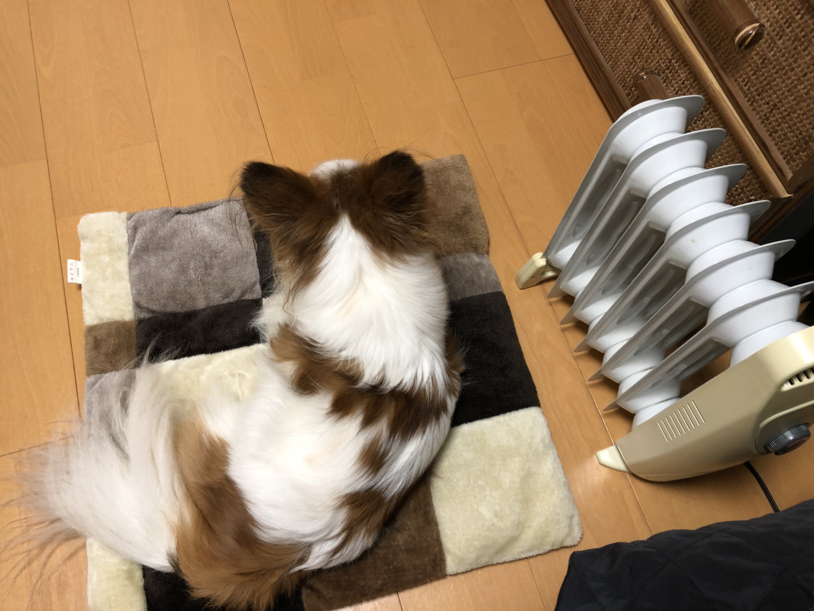

（勉強のお供をしてくれた愛犬）
こんにちは。本日はUSCPAの難易度を学習時間・英語力の観点からお話しさせていただこうと思います。 結論から言うと、USCPAは必要な時間と努力を惜しまなければ、誰でも合格できる試験だと感じています。 しかしながら、継続して学習時間を捻出できないと、予期せず長期戦にもつれ込んでしまう厄介な試験とも言えます。
実体験に基づく勉強時間は… 私は科目ごとに学習時間が異なりますが、トータルで1100時間ほどかかりました。 一般的には1000時間程度の学習が必要とされているため、人より少し時間がかかっている方だと思います。 詳しく科目ごとに検証していきたいと思います。
FAR（財務会計）
こちらの科目は特に時間がかかり、体感ですが350時間ほどかかったと思います。 理由としては、①短期集中で取り組まずダラダラと勉強してしまったためと、②会計基準の違いに深く入り込みすぎたと言うことが挙げられると思います。 学習を始めた最初の科目ということもあり、初期の頃はやる気が持続していたものの、その圧倒的な分量を前に学習が身につかないという時期がありました。 惰性で勉強を進めた結果、余計な時間を消費してしまったと思います。 モチベーション管理は今も悩み続けているところですので、もしオススメのやる気維持の秘訣があれば、ぜひコメントで教えていただけると嬉しいです。 次に、これは特に私特有の問題という気がしますが、IFRS, USGAAP, JGAAP全てを半端に学んでいたため、試験範囲でないところの会計基準の差異一つ一つに無駄な時間を割いてしまったと思います。 例えば学習を始めた頃は、全ての勘定科目をUSGAAPとJGAAPで名前を合わせようとしていたことがありました。 全く無駄だったとは思いませんが、効率的に勉強を進めていくならば、試験の対象範囲内での学習に努めた方が無難だと思います。
BEC（経営・IT）
BECは管理会計の知識や、一般的なビジネス知識を問う問題が多く、200時間もかからなかったと思います。 内容面では、特に簿記2級を学習された方であれば、工業簿記の知識が特に生きる科目と言えます。 加えてITの知識が後半に問われますが、新聞の経済欄に出てくる程度の内容が多く、専門的な知識が問われることはありません。 試験形式について、BECには記述式の問題が入りますが、こちらについても特段の困難はなく、TBSやMC問題の知識を用いれば必要十分の解答が導き出せると思います。
AUD（監査論）
私が唯一2回受験した科目ですが、最初の受験に200時間、再試験の対策に50時間ほど合計で250時間程度必要だったと思います。 1回目は明らかにインプット不足で、73点で不合格になりました。 ただ、1回目の試験で苦手な分野がわかったため、2回目の試験準備は非常に効率よく終わらせることができたと思います。 結論としては300時間ほどかけて勉強すれば、時間こそ多くかかるものの、1回目の受験で合格できたのでは、と今になって思います。
REG（ビジネス法・税法）
こちらは350時間ほどかかったと思います。 私が受験したタイミングの1月前になんと試験範囲改訂がありました（トランプ税制が試験範囲に反映されたタイミングです）。 私が利用していた予備校のテキストもそれに伴い変更されたのですが、教科書の改訂が間に合わず、即席のビデオ講義と補足プリントでの対応になりました。 この対応に予想以上に時間がかかり、結果として300時間も消費してしまいました。。
英語力はどこまで必要か
体感ですが、高校レベルの英語（TOEICだと600点程度）の知識があれば対応できるのではないかと思います。内容が専門的であることから、単語の意味さえ理解できれば文章の問うている内容が推測できてしまうからです。
そのため、会計や法律を英語で学んだことがない方（私もそうでしたが）は、専門性の高い単語を覚えることが必要になると思います。
ですので、学習初期の英語力こそあまり問われないものの、単語学習の努力が続けられることが、合格に必要な”英語力”なのではないかと思います。
まとめ
1年というのは短い様で長いものです。 1年もかけて試験に取り組もうとすると、試験範囲が変更されるというのもよくあることです。 私の場合は税法改定に影響を受けましたが、FARだとIFRS/USGAAPのコンバージョンによる試験範囲変更が予想されます。 頑張って勉強した範囲が、試験範囲改定で灰燼に帰するとそれはもうモチベーションに多大な影響があります笑 ただ、それを乗り越えて得られる資格は、苦労の甲斐のある素晴らしいものです。 皆様もぜひ挑戦してみてください。 この記事が挑戦の後押しになれれば嬉しいです。
t4ki